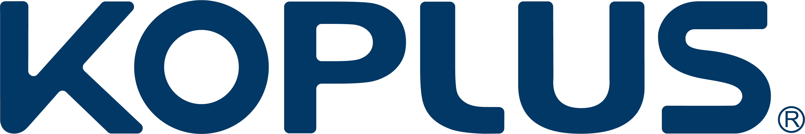
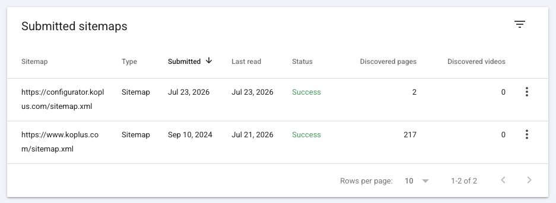
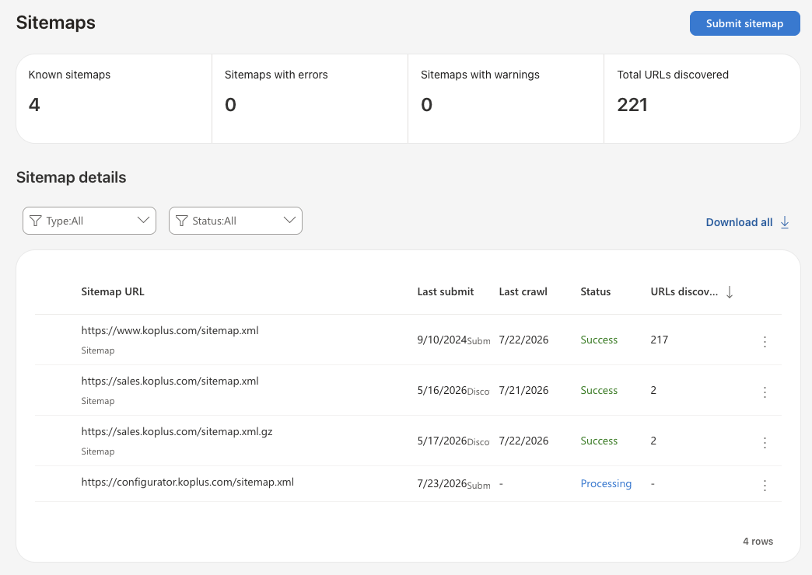
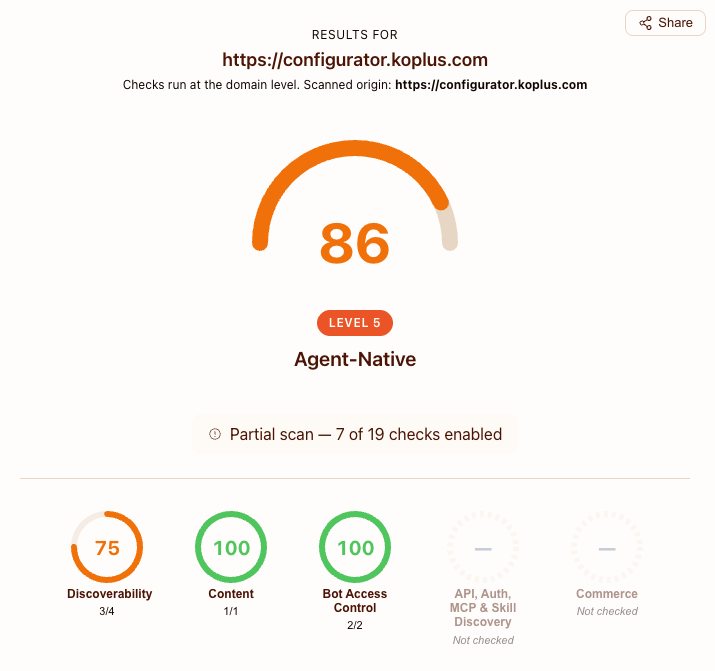

Search Console、Bing Webmaster、GA4 與 Agent-Ready 串接成果及證據彙整
KOPLUS Configurator 的搜尋平台、成效追蹤及 Agent Discovery 基礎已完成串接。
本文件以正式站回應、專案程式碼及平台畫面為結案證據，彙整目前已完成的搜尋與 Agent 可探索性功能。
瀏覽器仍以 HTML 呈現互動式配置器；搜尋引擎與 Agent 可透過 sitemap、robots、Link headers、Markdown 與 discovery endpoints 取得對應資訊。
所有項目皆以正式站或 repository 內容核對。
| 項目 | 狀態 | 證據 |
|---|---|---|
| robots.txt | 已完成 | 正式站回傳 200、text/plain，含一般與 AI crawler 規則。 |
| sitemap.xml | 已完成 | 正式站回傳 200、application/xml，由 CMS 系列資料產生。 |
| Canonical URLs | 已完成 | 系列頁原始 HTML 提供 canonical URL。 |
| Link response headers | 已完成 | 提供 api-catalog、service-desc 與 service-doc relations。 |
| Markdown for Agents | 已完成 | Accept: text/markdown 回傳 Markdown、Vary: Accept 與 token estimate。 |
| API discovery | 已完成 | API catalog、OpenAPI、service docs 與 agent index 均可公開存取。 |
| AI crawler policy | 已完成 | robots 明確列出 GPTBot、OAI-SearchBot、Claude-Web、Google-Extended 等。 |
| Content Signals | 已完成 | ai-train=no, search=yes, ai-input=yes。 |
| DNS-AID | 已完成 | 公共 resolver 可查得 _index._agents.configurator.koplus.com TYPE64。 |
| GA4 | 已完成 | G-1NE4ZT9T7G、Consent Mode、page_view 與 generate_lead。 |
| Tracking monitor | 已完成 | GitHub Actions 於 main push 與每日排程檢查 GA4 tag 及 generate_lead。 |
configurator.koplus.com 已達 Level 5 Agent-Native。
網站具備可被 Agent 發現、讀取與理解的公開介面。
Accept: text/markdown 可取得產品系列與模型內容。/.well-known/api-catalog/openapi.json/docs/api/.well-known/agent-index.json_index._agents.configurator.koplus.com同一個產品資料來源同時服務瀏覽器 HTML、Agent Markdown 與公開 discovery endpoints，確保不同用戶端取得一致的產品系列與模型資訊。
Configurator sitemap 已成功提交並讀取。

https://configurator.koplus.com/sitemap.xml網站與 sitemap 已建立於 Bing Webmaster Tools。

configurator.koplus.com/sitemap.xmlGA4、同意模式、頁面瀏覽與詢價轉換事件已整合。
G-1NE4ZT9T7G
generate_lead
app/layout.tsx 載入 Google tag 並執行 gtag('config', 'G-1NE4ZT9T7G')。app/layout.tsx 於 GA4 前設定 Consent Mode v2 預設值。components/ConsentBanner.tsx 更新 analytics_storage。public/sam-configurator.js 於成功送出詢價時觸發 generate_lead。page_view collect request。.github/workflows/tracking-monitor.yml 持續驗證 GA4 tag 與 conversion event。Configurator 的基本瀏覽與詢價轉換已具備一致的追蹤入口，並由自動化 workflow 保護正式站部署後的追蹤完整性。
外部檢測結果顯示 86 分、Level 5 Agent-Native。

Agent 可透過 robots、Markdown、Link headers、API catalog、OpenAPI、service docs、agent index 與 DNS-AID 發現並讀取 KOPLUS Configurator 的公開資訊。